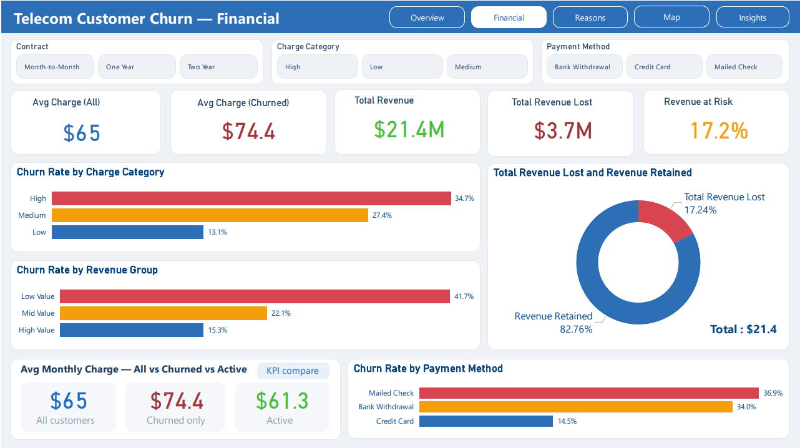
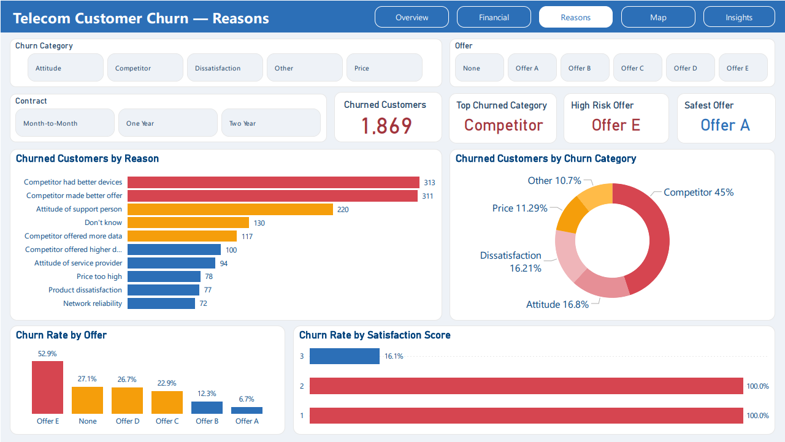
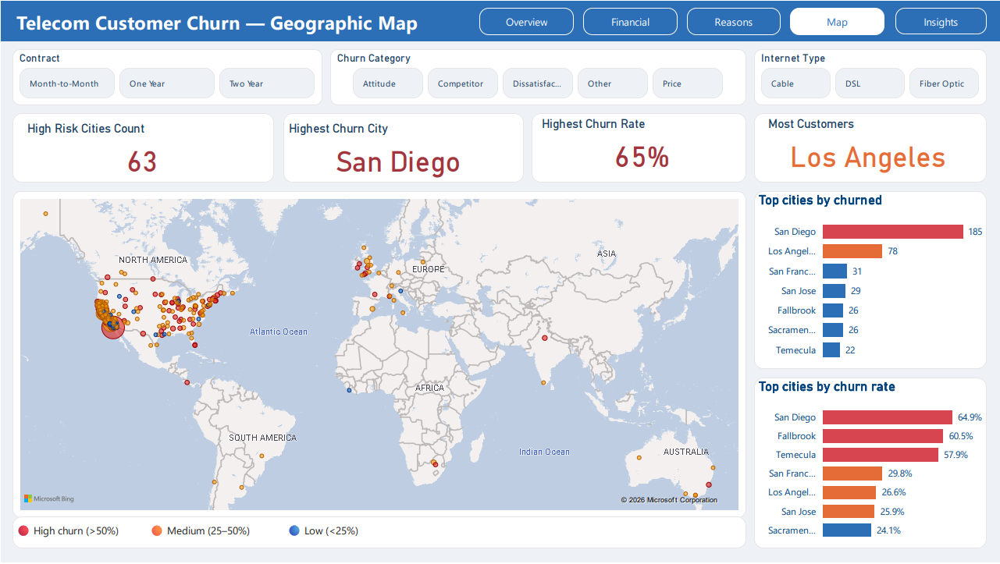
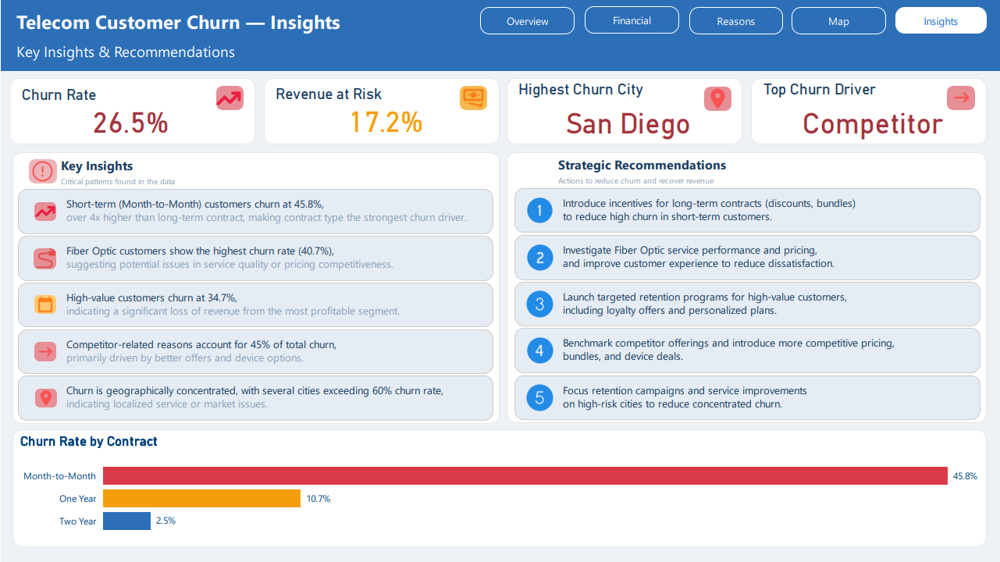

Telecom Customer Churn Analysis
August 2026




1. Problem Statement
The telecommunications company faced an increasing rate of customer churn, directly impacting Monthly Recurring Revenue (MRR). The goal was to analyze 7,043 customer profiles to isolate key churn drivers, assess revenue loss, and formulate targeted retention strategies.
2. Approach & Tools Used
- Data Wrangling & Power Query: Cleaned null value fields, standardized categorical columns, and created customer tenure groupings in Excel & Power Query.
- DAX Modeling: Formulated measures for
Churn Rate %,Total Churned Revenue, andRetention Ratio. - Power BI Dashboarding: Designed an interactive executive report with contract type slicers, tenure distribution, and service breakdown charts.
3. Key Insights
- Contract Type Impact: Month-to-month contract holders accounted for over 50% of overall churn compared to long-term contract customers.
- Internet Service Factor: Fiber optic subscribers exhibited significantly higher churn due to initial service setup issues.
- Payment Method: Electronic check users experienced higher churn rates compared to automated bank transfer customers.
4. Business Recommendations
- Incentivize month-to-month subscribers with discount packages upon transitioning to 1-year or 2-year agreements.
- Enhance customer onboarding and support quality for Fiber Optic installations during the first 90 days.
- Promote auto-pay setups to decrease payment friction and churn risks.